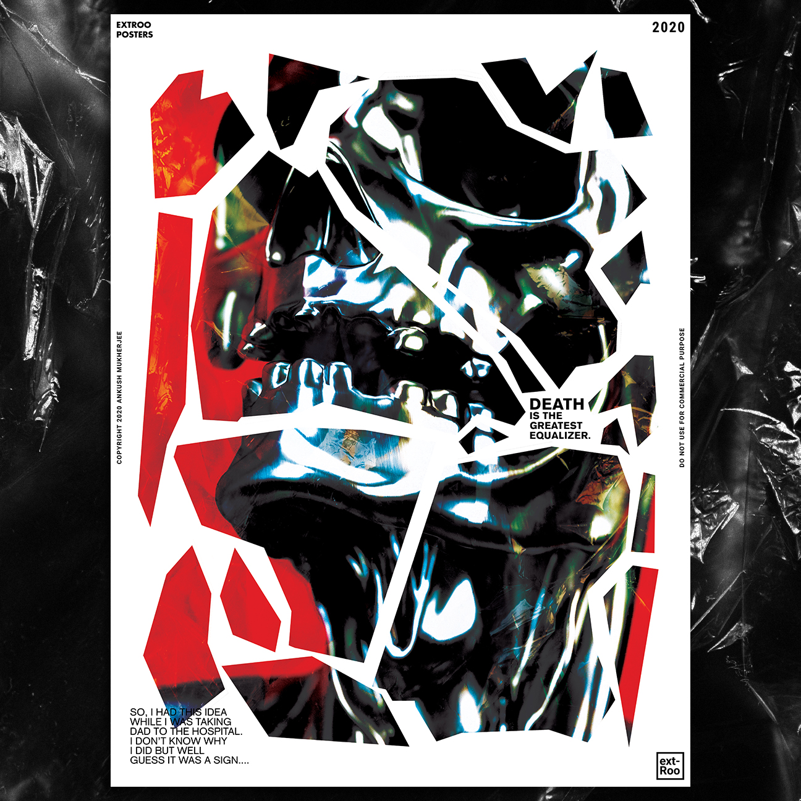
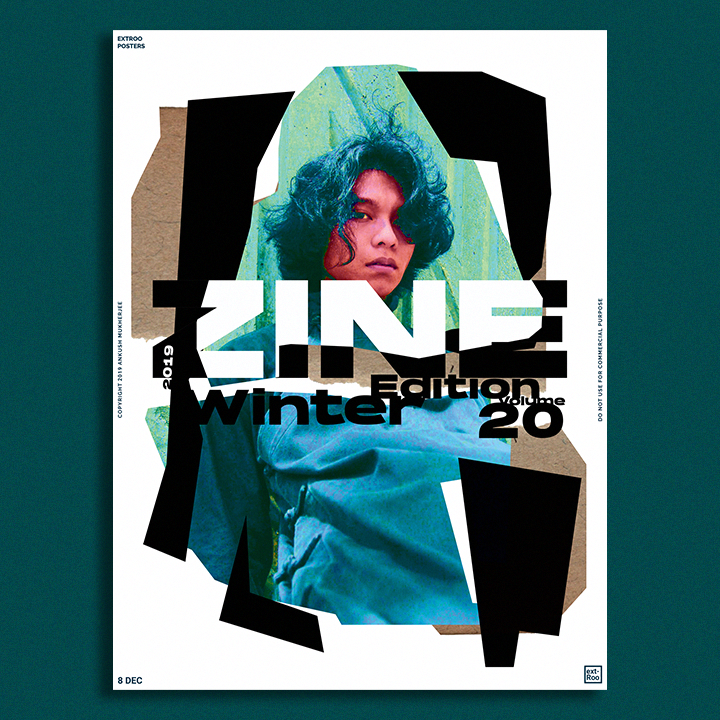

Q1. - What inspires you?
I’m inspired by seeing great layouts, visuals, photo-graphics, typography, music, feelings, etc. A major source for inspiration is the Swiss designers with their minimalism and grids. Along with them the works of Stefan Sagmeister, David Carson and Paula Scher.

Q2. - What is your creative process like?
Personal works are usually freer hence I get the chance to experiment and play with visuals and type. It can be abstract, use photo-graphics or just good type. Client works are more streamlined and methodical with the aim of providing them a suitable solution.

Q3. - What advice would you give to a younger self?
Tough question. I’d tell little me to buckle up for the ride and be confident. Keep taking on new challenges and explore rather than hide in the comfort zone. Some of the best things happened when I just let go.
Q4. - What are the themes you gravitate towards?
I find myself more inclined towards some Experimental visuals recently but minimalism is a sweetheart. I’m still tinkering with aesthetics and visual development. I am focused towards more expressive design currently either through visuals, type or both.

You can check out more of his work at
https://dribbble.com/extroo